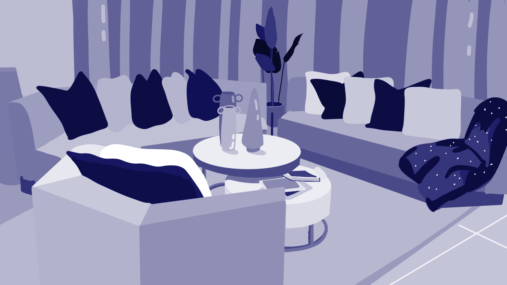

Illustrated Environment
Original

The illustrated environment emerges from a series of failed attempts that gradually shape the piece's final direction. Early drafts felt disconnected, either lacking atmosphere or failing to capture a sense of cohesion. I tried doing a train station I found the architecture frustating to replicate using the software, and tried with interiors, still ending up frustrated. These repeated frustrations ultimately led me to ground the work in a familiar subject: my own living room. By turning to a personal space, the composition gained authenticity and clarity, allowing the arrangement of furniture, objects, and textures to emerge naturally rather than through forced invention. The decision to use my living room as the foundation transformed the assignment into a more intimate exploration of environment and memory. The process of learning the software was equally significant. At first, the tools felt overwhelming, and each misstep seemed to highlight my inexperience. Yet the accumulation of failed attempts became a form of practice, teaching me how to manipulate layers, adjust lighting, and refine spatial relationships. What began as frustration evolved into technical fluency, and the act of overcoming these obstacles became embedded in the final work. The imposed three-color limit shaped the palette choice. I selected a monochrome blue scheme, which provided both unity and atmosphere. The restrained tones emphasize value and contrast, while the cool hues create a calm, cohesive mood that mirrors the living room's quiet familiarity. Together, these decisions highlight how limitations can foster creativity. The piece reflects not only a physical environment but also the iterative process of persistence, adaptation, and eventual resolution.
Back to Home